CS 2150 Roadmap
Data Representation | Program Representation | |||||
| string int x[3] char x 0x9cd0f0ad 01101011 |
Objects Arrays Primitive types Addresses bits |
Java code C++ code C code x86 code IBCM hexadecimal |
High-level language Low-level language Assembly language Machine code |
|||
Heap Structure Property
A binary heap is an almost complete binary tree, which is a binary tree that is completely filled, with the possible exception of the bottom level, which is filled left to right.
Examples:
| 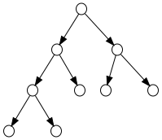 | 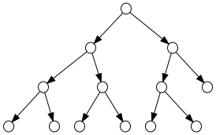 |
Almost complete binary tree of height h
| ||
| 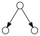 | |
| ||
Complete Binary Trees in Arrays
| 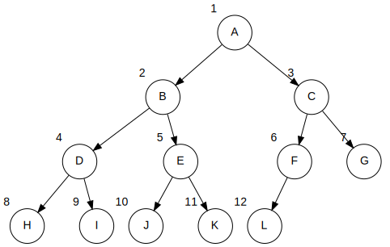 |
From node i:
left child: 2*i right child: (2*i)+1 parent: floor(i/2) |
Implicit (array) representation:
| A | B | C | D | E | F | G | H | I | J | K | L | ||
| 0 | 1 | 2 | 3 | 4 | 5 | 6 | 7 | 8 | 9 | 10 | 11 | 12 | 13 |
Heap Ordering Property
Heap ordering property: For every non-root node X, the key in the parent of X is less than (or equal to) the key in X. Thus, the tree is partially ordered.
| 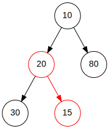 not a heap | 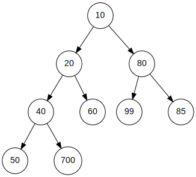 min-heap |
Insert: percolate up
| 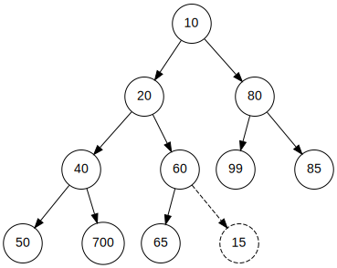 | → | 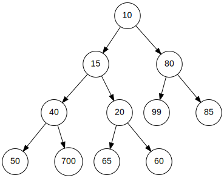 |
Insert expected running time
- How far to move up?
- Half of the nodes are leaves, so half of the inserts will only move up one level
- A quarter of the nodes are one level above the leaves, so one quarter of the inserts will move up two levels
- One eighth will require moving up 3 levels
- One sixteenth will require moving up 4 levels
- Etc.
- Expected running time:
-
\( \frac{1}{2}*1 + \frac{1}{4}*2 + \frac{1}{8}*3 + \ldots = \sum_{i=1}^{n} \frac{1}{2^i}*i = 2 \)
Which child to swap with
| 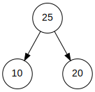 |
| 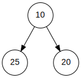 |
| 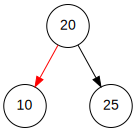 |
DeleteMin: percolate down
| 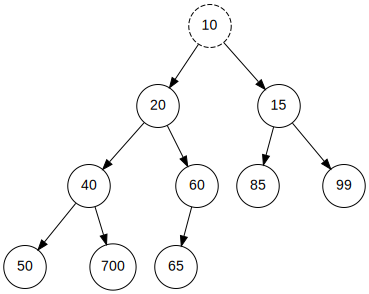 | → | 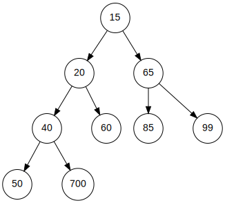 |
An xkcd about heaps...

|  | |
|

 |

 |
Huffman Coding
|
|
Decode: 1110001010011
| 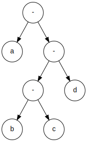 | This is a full binary tree! |
11 100 0 101 0 0 11 = dbacaad
Huffman Trees
Cost of a file encoded via a Huffman Tree containing n symbols:
\( C(T) = p_1 * r_1 + p_2 * r_2 + p_3 * r_3 + \ldots + p_n * r_n \)
Where:
- pi = the frequency (or probability) that a symbol occurs
- ri = the length of the path from the root to the node
Huffman encoding costs
|
|
Compression step 1 (a)
Determine frequencies of letters
| Character | Frequency |
|---|---|
| b | 1 |
| e | 2 |
| f | 1 |
| i | 5 |
| m | 1 |
| o | 2 |
| p | 1 |
| s | 2 |
| t | 4 |
| u | 1 |
| , (comma) | 1 |
| (space) | 9 |
Compression step 1 (b)
Build a min-heap, sorted by frequency 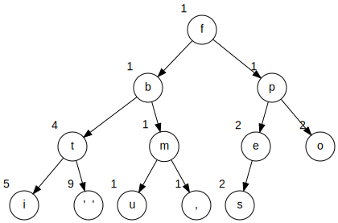 |
|
The Prefix codes
| 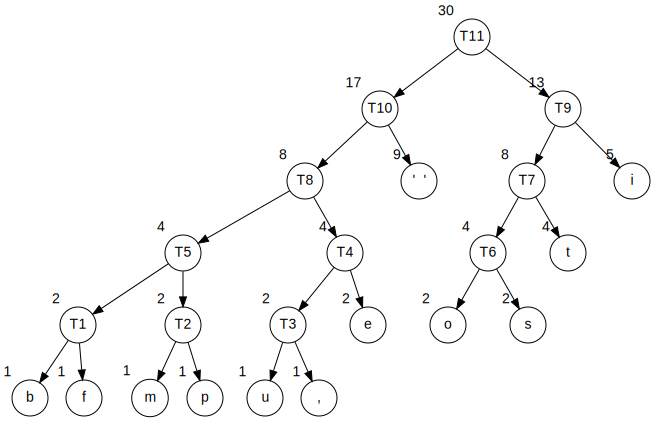 |
|
Resulting Encoding Table
| Character | Frequency | Prefix code | Total bits |
|---|---|---|---|
| b | 1 | 00000 | 5 |
| e | 2 | 0011 | 8 |
| f | 1 | 00001 | 5 |
| i | 5 | 11 | 10 |
| m | 1 | 00010 | 5 |
| o | 2 | 1000 | 8 |
| p | 1 | 00011 | 5 |
| s | 2 | 1001 | 8 |
| t | 4 | 101 | 12 |
| u | 1 | 00100 | 5 |
| , (comma) | 1 | 00101 | 5 |
| (space) | 9 | 01 | 18 |
Total is 94 bits
The Prefix codes
|
|
ASCII Character Codes in Hexadecimal
| 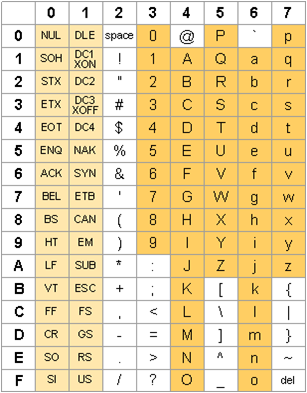 | For the lab, you only need to account for the printable characters (0x20 to 0x7e)
Character codes:
|